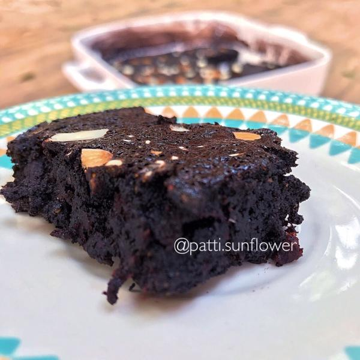

Brownie de alfarroba saudável

Se tem um doce que não conheço ninguém que consiga resistir é o brownie. Bolinho denso, cremoso e cheio de chocolate. Essa versão é um upgrade nutricional dessa guloseima - afinal doce pode ser gostoso e saudável, não é mesmo?.
Ingredientes para fazer Brownie de alfarroba saudável:
- 100 gramas de beterraba ralada
- 80 gramas de óleo de coco
- 100 gramas de açúcar de coco
- 50 gramas de alfarroba em pó
- 2 ovos
- 50 gramas de farinha de amêndoas
- 1 colher de chá de café instantâneo em pó
- 1 pitada de sal
- amêndoas picadas (opcional)
Modo de Fazer:
- Comece misturando os ovos com o açúcar de coco até ficar homogêneo.
- Adicione a beterraba ralada e mexa bem. Não se preocupe com a coloração da massa nesse momento, seu brownie de alfarroba saudável ficará bem escurinho, tal qual brownie de chocolate!.
- Numa vasilha em banho maria derreta o óleo de coco, a alfarroba e o café instantâneo juntos.
- Junte a mistura de ovos com a de óleo de coco e adicione a farinha de amêndoas.
- Para assar este brownie funcional unte uma forma com óleo de coco e polvilhe alfarroba em pó.
- Despeje a mistura na forma untada e salpique amêndoas picadas (opcional).
- Asse por 30-35 minutos em forno a 180°C, até formar uma casquinha na superfície, e está pronto seu brownie de alfarroba saudável! Deixe esfriar um pouco antes de desenformar, para não desmanchar muito, e bom apetite!